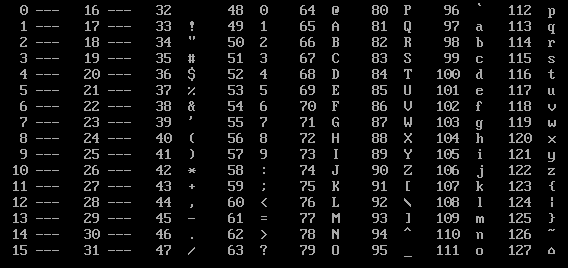
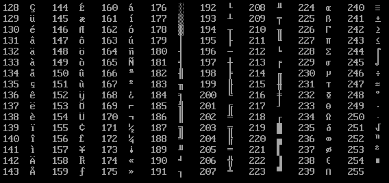

ZZT Manual » ZZT-OOP Programming Language » Reference manual » ASCII character chart
Reference manual
ASCII character chart
Used for the #char command.
NOTE: The characters between
codes 000 and 031 are control
characters and cannot be
shown. They are be represented
by ---.

